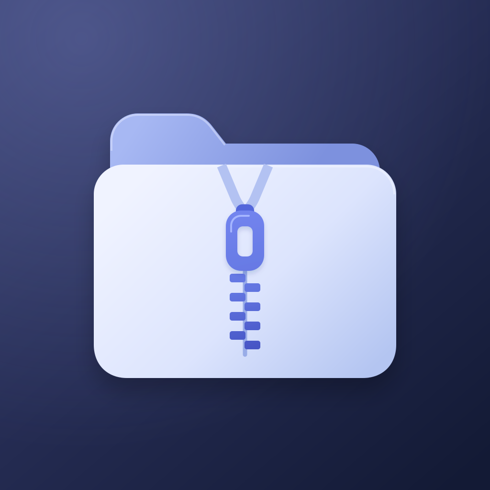
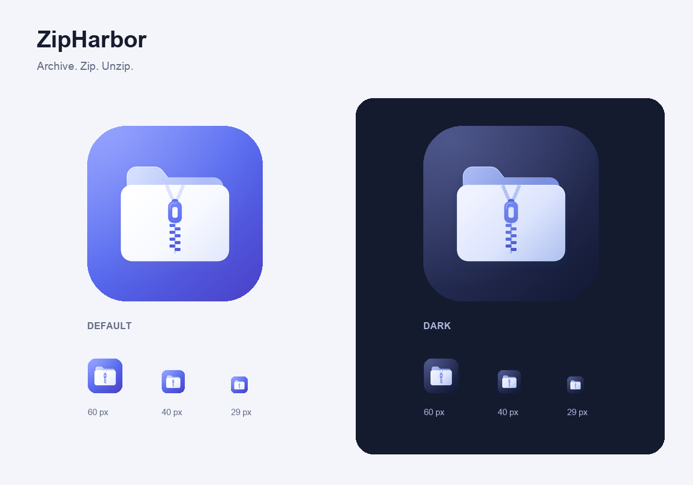
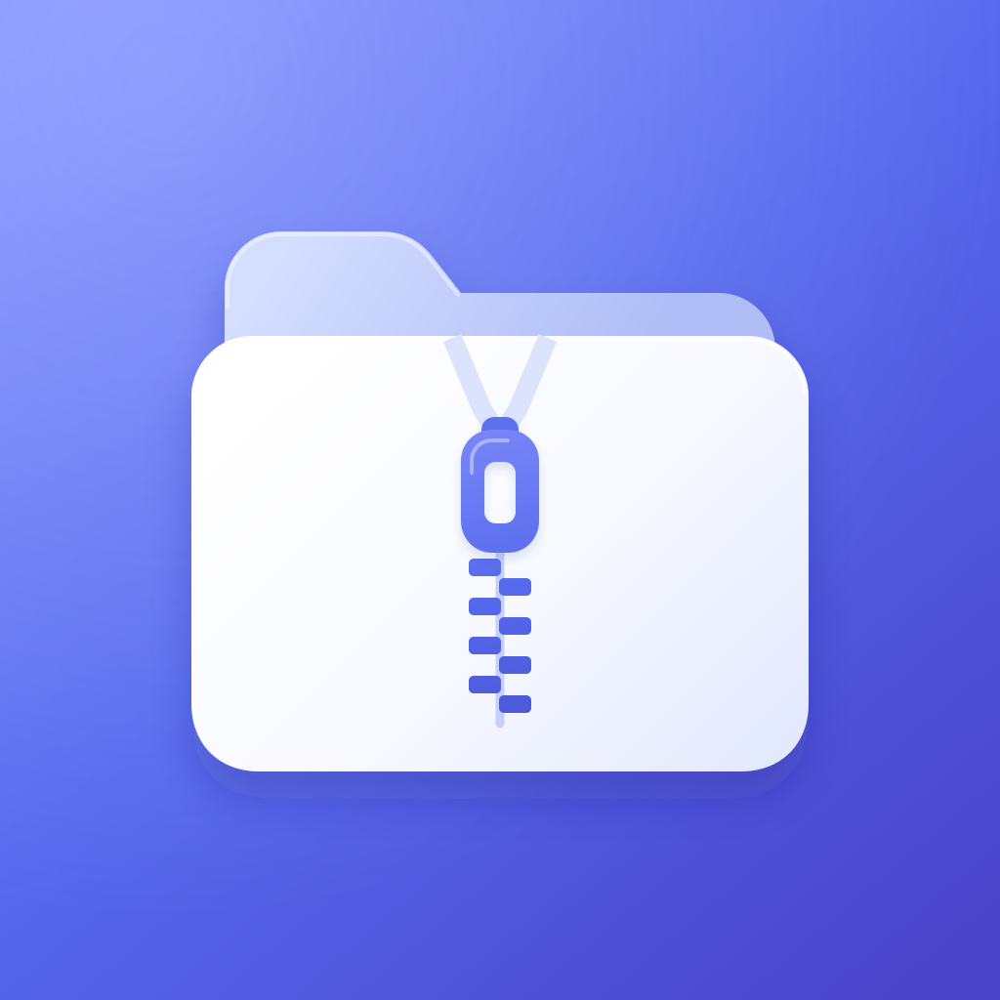

验收与设计素材截图与证据 · app-icon查看资源说明previous-app-iconzipharbor-icon-1024zipharbor-icon-dark-1024zipharbor-icon-darkzipharbor-icon-previewzipharbor-icon摘要、日志与附件asset-catalog-validation.logrender-icon.pyvalidation.json